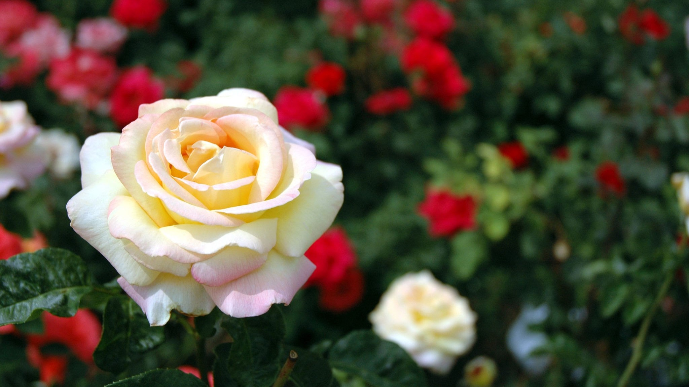
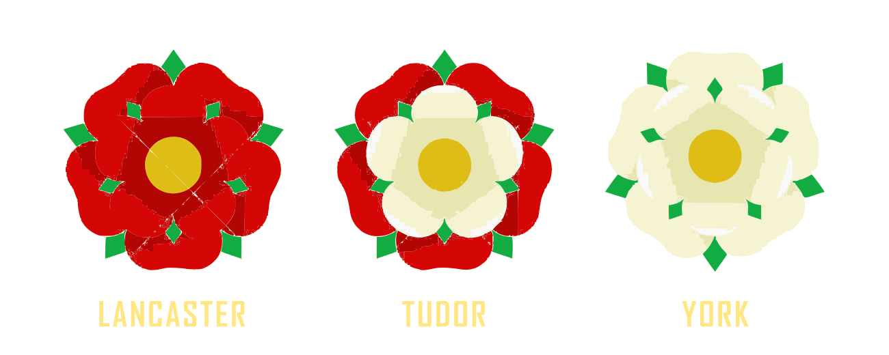

Red + White: Surveying Alchemical Symbolism in Shakespeare's 'Venus and Adonis'
Are not the choysest Fables of the Poets, That were the Fountaines, and first Springs of Wisedome, Wrapt in perplexed Allegories? --Ben Jonson, the Alchemist
The aim of this work is to explore how Alchemical symbolism may have been used in Shakespeare's poem and reinterpretation of a Roman myth, Venus and Adonis, especially in the colors red + white as potential representatives of a gendered pair of universal principles, opposites, which may well have been what Venus and Adonis represented in esoteric interpretations of the myth or its earliest versions. As representatives of the universal parents, this work will also dig into how red and white came to have this position in the pedigree of Alchemy.
While we may never know if Shakespeare sucessfully rebirthed lead into gold, or if he even took the great labor upon himself, that he was at least familiar with Alchemy and its ideas is apparent in his work. In Sonnet 33 the poet gives a succinct sum of what Alchemy is in just the first four lines using just a few symbols: the Sun, gold, earth, and water.
Full many a glorious morning have I seen Flatter the mountain tops with sovereign eye, Kissing with golden face the meadows green, Gilding pale streams with heavenly alchemy; Anon permit the basest clouds to ride With ugly rack on his celestial face, And from the forlorn world his visage hide, Stealing unseen to west with this disgrace: Even so my sun one early morn did shine, With all triumphant splendour on my brow; But out, alack, he was but one hour mine, The region cloud hath mask'd him from me now. Yet him for this my love no whit disdaineth; Suns of the world may stain when heaven's sun staineth.
Here Shakespeare has taken Heaven and Earth and made lovers of them. Is there more to Alchemy than this? The Sun (Heaven) in Alchemy is in the man's role, his element is gold, among others, and he is fire. As Shakespeare has it here, alchemy is synonymous with transformation, and it is the Sun's fire which is the transformative agent. A fire which is love, above all sovereign, turns pale streams golden, the gist of Alchemical transmutation.
On the suspicion that Shakespeare was versed in Alchemical symbolism insomuch that he might write an Alchemical allegory of transmutation, his poem 'Venus and Adonis' was selected for investigation. And there's a reason for that.
Why 'Venus and Adonis' for Analysis
From among Shakespeare's lush garden of poems, what makes 'Venus and Adonis' a ripe pick for picking apart is the mythological tradition from which it comes. While Shakespeare tells only a portion of it, the larger story of a god and goddess parted by death, the winter of her grief, and the spring to new life and refreshed love in his resurrection and return fits well with the basic Alchemical narrative of transmutation which likewise centers on the relationship of a pair of primordial lovers.
Furthermore, the story of Venus and Adonis was linked with the changing of the seasons, it's own kind of transmutation which we know hinges on the relationship between the Sun and the Earth.
The Orphic Hymn to Adonis (2nd - 3rd century CE)
Much-named, and best of daimons, hear my prayer, the desert-loving, decked with tender hair; Joy to diffuse, by all desired is yours, much formed, Eubouleos; aliment divine Female and Male, all charming to the sight, Adonis ever flourishing and bright; At stated periods doomed to set and rise, with splendid lamp, the glory of the skies. Two-horned and lovely, reverenced with tears, of beauteous form, adorned with copious hairs. Rejoicing in the chace, all-graceful power, sweet plant of Aphrodite, Love’s delightful flower: Descended from the secret bed divine, of lovely-haired, infernal Persephone. ‘Tis yours to sink in Tartarus profound, and shine again through heaven’s illustrious round, With beauteous temporal orb restored to sight; come, with earth’s fruits, and in these flames delight.
The story was one commemorated by many peoples of the Near East and Mediterranean tracing back to the cradle of civilization. The earliest known version of the story is the ancient Sumerian myth of Inanna (Lady of Heaven) and Dumuzi (Good Son) found inscribed in tablets dating to 2100 - 2000 BCE. Inanna and Dumuzi came to be known among the Babylonians as Ishtar (Star) and Tammuz (variant of Dumuzi), and subsequently as Astarte and Tammuz by the Phoenicians who imported the pair of deities to Greece where they were called Aphrodite and Adonis. The Semitic term Adon (Lord) which the Phoenicians called Tammuz by and which shares the same root as the Hebrew Adonai used for God in the Bible became the name Adonis used by the Greeks. Where the name Aphrodite came from or even what it means is unknown, while Venus, it is known, comes from a Latin word venus which means "love, beauty, charm".
From the Sumerians to the Romans, the royal pair weren't just the subject of myth but also of annual rites. Among these were the ritual acts of women weeping for the slain deity and the Sacred marriage celebrating his resurrection and reunion with his love. In Mesopotamia the Sacred Marriage ritual typically involved a priestess of the Goddess and a king, priest, or priest-king, enacting the sacred sexual union of the deities. In the Adonia festivals of Greece a bridal bed would be prepared with the finest coverings, surrounded with offerings and/or adorned with flowers in a symbolic anticipation of Adonis' return from the dead and temporary reunion with Aphrodite.
Of course, the reason these rites were annual is that they were linked with the changing of the seasons. And so we have already two reasons to suspect a possible link between Alchemy and this mythological tradition:
- The Sacred Marriage
- The correlation between the departure and return of the god and the changing of the seasons
Overview of Alchemy
The symbol of chemistry is drawn from the creation by its adepts, who cleanse and save the divine soul bound in the elements, and who free the divine spirit from its mixture with the flesh.
--Zosimos of Panopolis
Alchemy, in brief, is the predecessor of modern science nestled in the belief that the universe is God's Bible, that truths bound in parables abound in Nature from the seldom seen formation of salts to the everyday apparent changing of the seasons. Hence, the tendency in teaching the Art--because it was esoteric--to transmit knowledge in allegory or image using symbolism which had a natural precedent, e.g. fire, salt, gold, seed, etc.. Were it possible to sum the concern of these teachings into a single word, it would have be transformation or evolution, for as the world turns, it turns out.
So, in the way a seed moved by sunlight metamorphoses soil and water into the unearthly loveliness of a rose, so Alchemists sought to transform their own being from something gross into some divine thing worthy of show though there is a key difference. Alchemists saw humans as participants in creation, but made the distinction between Nature and Art. Nature causes grain to grow from the ground, but for the edible part to be separated from the chaff, the grain ground into flour, and mixed with leaven to make bread required the intervention of Art. So, Alchemy was sometimes called the Royal Art, and the enterprise of freeing the divine soul in matter through transformation they called the Magnum Opus (Great Work).
Love is a spirit all compact of fire, Not gross to sink, but light, and will aspire.
As the sun is, so to speak, a flower of the fire and (simultaneously) the heavenly sun, the right eye of the world, so copper when it blooms—that is when it takes the color of gold, through purification—becomes a terrestrial sun, which is king of the earth, as the sun is king of heaven. Just as there is a sun, flower of fire, a celestial sun, right eye of the world; likewise copper, if it becomes a flower (that is to say, if it takes on the color of gold) by purification, then becomes an earthly sun, which is king on earth, as the sun is king in heaven.
In only the last year did I start to study Alchemy and become familiar with its symbols. Though I am no expert, some things have become apparent.
One is that there is no canon of Alchemy, but still there are some ideas and corresponding symbols which are consistent, such as the belief in a universal masculine and feminine principle which are often represented by what were conceived of as pairs of opposites: the metals Gold and Silver, the celestial bodies Sun and Moon, the elements Sulfur and Mercury, or a pair of the Four Elements, Fire and Water, sometimes Air (Wind) and Water. They were also represented by the Red King and White Queen.
The "union of opposites" is a major theme of Alchemy, and for those who practiced it the world was full of opposites. Indeed, an argument could be made that gendered languages exist because of the widespread belief that the universe is the product of a sexual union between two which were halves of one, and all opposites were one initially within an inchoate mass (the mother) before the seed of the father began a process of differentiation, or dividing hermaphroditic wholes into gendered pairs. A tale along these lines comes from Ovid's 'Metamorphoses'--a book about transformation.
Before there was earth or sea or the sky that covers everything, Nature appeared the same throughout the whole world: what we call chaos: a raw confused mass, nothing but inert matter, badly combined discordant atoms of things (...) Nothing retained its shape, one thing obstructed another, because in the one body, cold fought with heat, moist with dry, soft with hard, and weight with weightless things.
The process of transmutation which Alchemists took upon themselves often involved uniting such opposed components of their own being into one, though what exactly this means is not clear and it should be pointed out that Alchemical texts are often deliberately obscure. On right, a diagram by the Alchemist, George Ripley, depicting the stages of transmutation. Note the red and white buds. Below, a sample from a text titled 'The Hermaphrodite Child of Sun and Moon' to give a taste of how cloudy the language can be but also note how the author, apparently speaking on behalf of that which Alchemists seek, describes himself as "dry water".
Hermes called me the Sun and the Moon. Riplaeus called me the green lion. Our author called me hermaphrodite, but I pay no attention to that. It makes no difference. Nor does it matter what the sophists call me, for they learn nothing for all their trouble except: (1) I am One Substance, not two; (2) In me is Bernard's little fountain; (3) I am dry water, subtle pure; (4) I am raised up by the power of Mars, as commanded by Philaleth, the famous Adept who coagulates my esoteric nature with Mercury.
The paradoxical nature of "dry water" is likewise used by Shakespeare in 'Romeo + Juliet' in Romeo's paradox-filled monologue about love and hate being not far removed. In the poetry of Rumi, the Sufi teacher writing in the 13th century about the alchemy of Love we see this union of opposites mentioned explicitly:
You come to us from another world; From beyond the stars and void of space Transcendent, pure – of unimaginable beauty. Bringing with You the essence of Love. You transform all who are touched by You – Mundane concerns, troubles and sorrows dissolve in Your presence Bringing joy to ruler & ruled, to peasants and kings. You bewilder us with Your grace; All evil is transformed into goodness. You are the Master Alchemist! You light the fire of Love in earth & sky, In heart & soul of every being. Through Your loving, existence & non-existence merge – All opposites unite – All that is profane becomes sacred again.
While the union of husband and wife might not seem as paradoxical as the union of being and non-being, order and chaos, or good and evil, the union of opposites was nonetheless often depicted as a marriage, and sometimes referred to as the Chemical Marriage (Wedding) such as in 'The Chymical Wedding of Christian Rosenkreutz' a German tale published in 1616 about a fictional character's trials leading up to his attendance of a royal marriage ceremony. In the story of the Chymical Wedding, red is mentioned several times, and about a third of those red and white appear together:
- I prepared myself for the way, put on my white linen coat, girded my loins, with a blood-red ribbon bound cross-ways over my shoulder. In my hat I stuck four red roses, so that I might sooner be noticed amongst the throng by this token
- ...and we then imagined nothing other but that the Bridegroom was ready to present himself; which nevertheless was a huge mistake. For it was again the Virgin of yesterday, who had arrayed herself all in red velvet, and girded herself with a white scarf.
- Her train was now no more of small tapers, but consisted of two hundred men in armour, who were all (like her) clothed in red and white.
- and I, most unworthy, were to ride alongside the King, each of us bearing a snowwhite ensign with a red cross
The Red King and White Queen were also linked with stages of the Magnum Opus, though where they appear in those stages is not consistent nor is the number of stages, and, so far, I have seen that number as 3, 4, 7, and 12. In a text titled Donum Dei (Gift of God), the Great Work is divided into 12 stages. In the composite of illustrations below we see the fourth stage, Putrefaction, and the final two, White Rose and Red Rose which depict the Red King and White Queen not united, but as two different phases. By analogy this would be like transmuting metal in stages where silver is the stage just before gold.
Regardless of how the symbols are employed within the variety of Alchemical texts, the question relevant to this analysis is, how do we spot Alchemical symbolism in a work that isn't known to be Alchemical? When we see Shakespeare, for example, describe Adonis as "More white and red than doves or roses are;" the first reasonable assumption is that Shakespeare is speaking figuratively, not literally here. But, given that, the question that immediately follows is: what context should be used for interpreting such language? Is Shakespeare painting with Alchemical pigments, drawing from some art school color theory, perhaps just patriotically enamored of England, or even using Adonis as a metaphor for his home country?
The flag of England is the Cross of St. George, the dragon-slayer. The red is said to be the dragon's blood painted on his shield which had been pure white.Red and White are prominent colors in English regalia and heraldry, so much that a king draped in red with white fringe has become its own icon of kingship. Not only did kings dress in red and white, but so too did dukes, duchesses, and their peers. Pictured below, a duke, a duchess, and a king.
The Wars of the Roses, a decades long war in England between the Houses of York and Lancaster, ended with a marriage. Henry Tudor, a claimant for the throne from the Lancastrian side effectively brought the conflict to rest with his victory in the battlefield and his marriage to Elizabeth of York, thus beginning the Tudor Dynasty.
William Shakespeare wrote four plays about these wars in the 1590's, about 100 years after the fact. He addresses this union in the final play, Richard III:
Proclaim a pardon to the soldiers fled That in submission will return to us. And then, as we have ta’en the sacrament, We will unite the white rose and the red;
The Wars of the Roses were not so called at the time of the warring, and accounts conflict as to whether the opposing houses actually used roses as their emblems, leaving suspicion that the creation of the Tudor rose by combining a red rose and a white was a bit of propaganda. But, if so, was it only a symbolic way of depicting a united England? Is it possible that Henry Tudor and Elizabeth of York are the original Red King and White Queen and Alchemists adopted this image in their work? Or is it more likely the other way around?